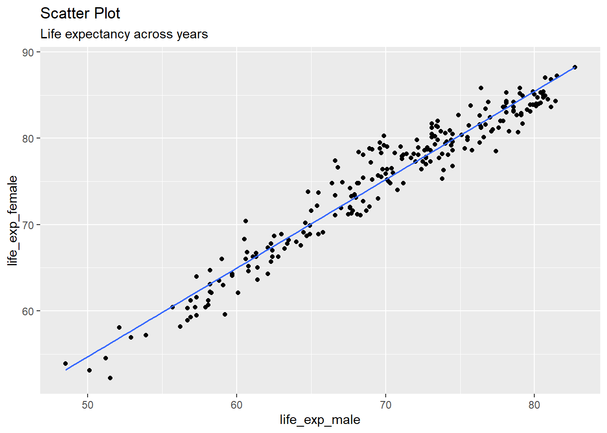

I don’t know yet. If yes, then good for me I suppose :)
Let’s find out.
First, we gotta set up our document with relevant packages.
library(tidyverse)
── Attaching core tidyverse packages ──────────────────────── tidyverse 2.0.0 ──
✔ dplyr 1.1.4 ✔ readr 2.1.5
✔ forcats 1.0.0 ✔ stringr 1.5.1
✔ ggplot2 3.5.1 ✔ tibble 3.2.1
✔ lubridate 1.9.3 ✔ tidyr 1.3.1
✔ purrr 1.0.2
── Conflicts ────────────────────────────────────────── tidyverse_conflicts() ──
✖ dplyr::filter() masks stats::filter()
✖ dplyr::lag() masks stats::lag()
ℹ Use the conflicted package (<http://conflicted.r-lib.org/>) to force all conflicts to become errors
library(mosaic)
Registered S3 method overwritten by 'mosaic':
method from
fortify.SpatialPolygonsDataFrame ggplot2
The 'mosaic' package masks several functions from core packages in order to add
additional features. The original behavior of these functions should not be affected by this.
Attaching package: 'mosaic'
The following object is masked from 'package:Matrix':
mean
The following objects are masked from 'package:dplyr':
count, do, tally
The following object is masked from 'package:purrr':
cross
The following object is masked from 'package:ggplot2':
stat
The following objects are masked from 'package:stats':
binom.test, cor, cor.test, cov, fivenum, IQR, median, prop.test,
quantile, sd, t.test, var
The following objects are masked from 'package:base':
max, mean, min, prod, range, sample, sum
library(skimr)
Attaching package: 'skimr'
The following object is masked from 'package:mosaic':
n_missing
library(ggformula)
Now, let’s import the dataset.
women <-read_delim(file ="../../data/women.csv",delim =";")
Rows: 18408 Columns: 7
── Column specification ────────────────────────────────────────────────────────
Delimiter: ";"
chr (3): Entity, Code, Continent
dbl (2): Year, Population - Sex: all - Age: all - Variant: estimates
num (2): Life expectancy - Sex: female - Age: at birth - Variant: estimates,...
ℹ Use `spec()` to retrieve the full column specification for this data.
ℹ Specify the column types or set `show_col_types = FALSE` to quiet this message.
So, the reason why I have filtered out the data on the basis on year 2015 is so that I can replicate the table in Arvind’s website. I suppose, it has been done also because it is easier to analyse such context while keeping the year constant. Why? I think it is so because there are other vital factors ( like pollution index, poverty index, cultural and ‘current’ affairs etc.) that play a crucial role in determining the life expectancy, and they tend to change overtime.
This is a scatter plot! It is depicting the correlation between life expectancy between males and females. I am unable to recreate the exact replica of the graph; I can’t figure out how to. However, it seems like we can make do with this for the time being.
When we look at this graph carefully, we see that almost all the points are placed such that for every point, x ( male life expectancy) < y(female life expectancy).
To better understand what is going on, I will add a line to the graph.
Warning: Using the `size` aesthetic with geom_line was deprecated in ggplot2 3.4.0.
ℹ Please use the `linewidth` aesthetic instead.

Observations
We see that while it may appear that the slope (m) = 1, it is not true. When we look carefully, we see that vale on the x axis starts from 50 onwards, whereas it start from 60 onwards on y axis. Hence, m is not 1.
In the website’s chart, it is clearly seen that life expectancy for both the genders is more or less the same in countries with bigger populations.
What does the dashed line in the chart represent?
it represents slop of the graph when m = 1, meaning when there is a 1:1 correlation between both the variables. It is also called the equality line.
What pre-processing of the data was required to create the chart?
Filtering by year
dropping rows with missing data
renaming and mutating data
I used mutate to both rename and mutate the data variables
renames the life expectancy variables and then divided them by 10 to get the exact age.
I converted ‘continent’ variable to factor as it had 7 levels. It seemed only fair to convert it to a factor.
What research activity might have been carried out to obtain the data graphed here? Provide some details.
Life expectancy is calculated at different stages and ages. I do not think the researchers went around on the streets gathering data themselves, although that would’ve been fun. However, I believe this data might have been obtained through different sources over the years. For example, they would’ve contacted WHO and other trusted organizations to gather this data. Government websites, and hospitals from across the world would’ve been contacted for the same.
It is also possible that physical surveys were conducted by authorities, especially in smaller countries where it is probably not possible to find tidy data, and accessibility through digital mediums is not entirely possible.
What might be the Hypothesis / Research Question, based on the Chart?
Which gender lives longer in a particular city?
Do women live longer than men in countries with big populations?
Women tend to live a longer and happier life, no matter where they are [Hypothesis].
Inference
Across most countries, women consistently live longer than men, with nearly all data points above the equality line. In Countries with bigger populations, life expectancy is mostly same between both the genders. Despite being considered the weaker gender, women outlive the ‘stronger’ men.